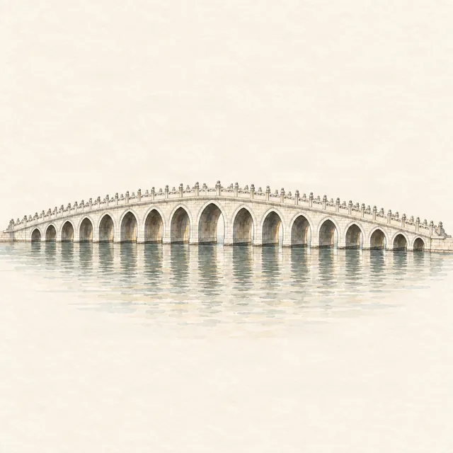

First time in Beijing · Beijing · itinerary
Beijing in 2 days on visa-free transit
Last checked:

Can I see Beijing in 2 days on visa-free transit?
Yes. Under China's 240-hour visa-free transit policy, travellers from 57 countries flying on to a third country can stay up to 10 days without a visa if they arrive through one of the 65 listed ports; check that your airport is on the official list. Two full days cover the essentials: the Forbidden City and Jingshan Park on day 1, the Great Wall and the Summer Palace on day 2. Book the Forbidden City before you fly, because tickets open seven days ahead and sell out.
Who qualifies for 240-hour transit?
- Citizens of the eligible countries, travelling on an ordinary passport.
- A confirmed onward ticket to a third country or region (Hong Kong and Macau count): Beijing to your home country is not transit.
- A fixed date and itinerary on the onward ticket; allow extra time at immigration.
The rules and the list of countries change; check the National Immigration Administration's current notice or your nearest Chinese embassy before booking.
Day 1: the Forbidden City and Jingshan Park
- 08:00 Head for the Meridian Gate for the 08:30 opening; see entrance and exits for the way in.
- 08:30–12:00 The Forbidden City along the central axis, with one side trip. See the half-day route.
- 12:00 Out through the Gate of Divine Might; lunch nearby.
- 13:30 Jingshan Park: climb to Wanchun Pavilion for the view over the palace.
- 15:00 Walk west to Beihai Park or north to the hutong lanes around Shichahai and the Drum and Bell Towers.
- Evening Wangfujing or Qianmen for dinner.
Day 2: the Great Wall and the Summer Palace
- 07:30 Leave for the Great Wall. Mutianyu has a cable car and is best reached by car; Badaling is on the S2 suburban line and the Beijing–Zhangjiakou high-speed railway. See which section to choose.
- 09:00–12:30 On the wall. Book Great Wall tickets online in advance.
- 14:30–17:30 The Summer Palace, which lies on the way back into the city: East Palace Gate, the Long Corridor, the Marble Boat.
- Evening Peking duck.
If the Great Wall is too far for your timing, swap it for the Temple of Heaven in the morning and give the Summer Palace a full afternoon.
What should I set up before I land?
- Forbidden City tickets, booked with your passport at 20:00 Beijing time, seven days ahead. See how.
- A payment app: Alipay or WeChat Pay with a foreign card linked.
- Mobile data: an eSIM or roaming plan, since Google services do not work in mainland China. See getting around Beijing without Google.
- Offline guides and maps, so you are not depending on a connection on the day.
What if I only have one day?
Do day 1. The Forbidden City and Jingshan are next to each other, in the centre of the city, and need no long transfers.
Which guides cover these sights offline?
Penyola covers three of them: Jingshan Park (free), the Forbidden City and the Summer Palace, with hand-drawn maps, stories and walking routes on your iPhone, no connection needed. It is a useful companion when your mobile data is slow or your roaming plan runs out.
Beijing's imperial sights in detail
- The Forbidden City in half a day
- Forbidden City tickets for foreigners
- The Summer Palace in one day
- Jingshan Park: the best view of the Forbidden City
More planning guides
- Forbidden City tickets for foreigners
- The Summer Palace in one day
- Getting around Beijing without Google
Sources
Checked on these official pages on 9 November 2026: